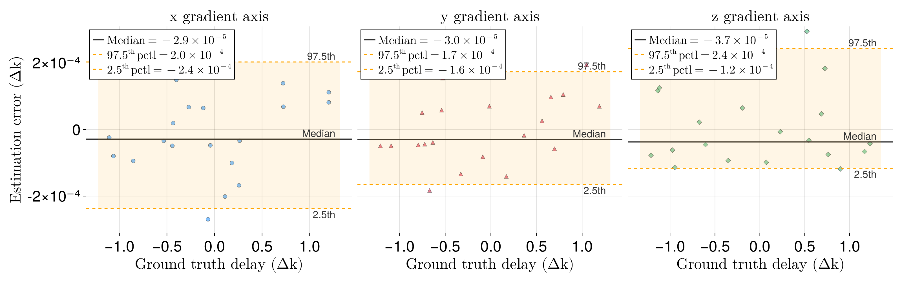
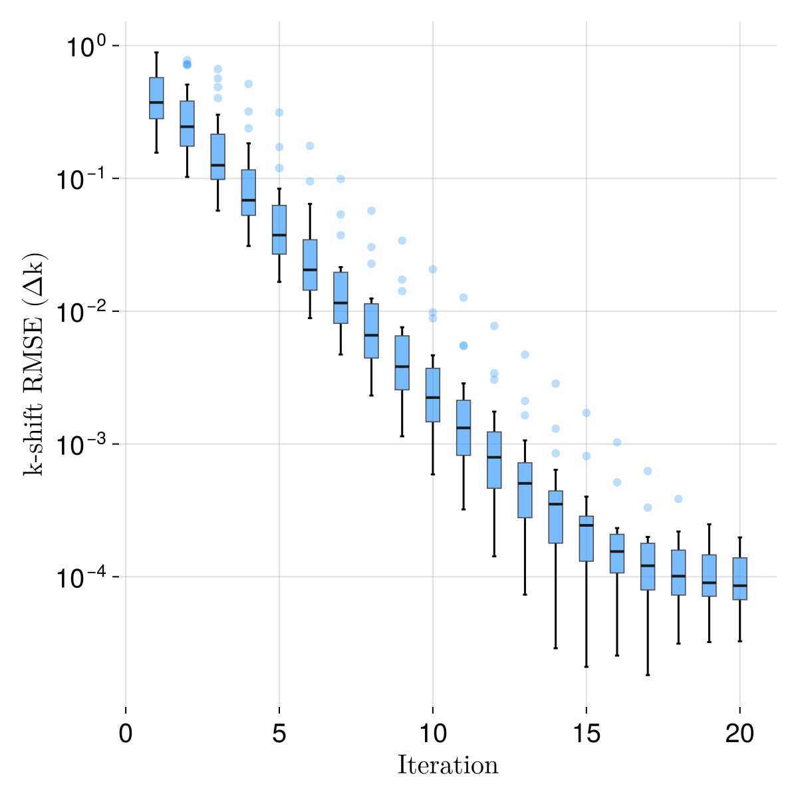

Monte Carlo Validation
This example reproduces the Monte Carlo simulation from the test suite and visualises the results with a Bland–Altman plot and an RMSE convergence plot.
Setup
We simulate a 3D Shepp–Logan-like ellipsoid phantom, generate kooshball trajectories with known per-axis gradient delays, add noise, and then estimate the delays using estimate_delay.
using MRIRadialDelayEstimation
using MRISubspaceRecon
using ImagePhantoms
using ImagePhantoms: phantom
using NonuniformFFTs
using LinearAlgebra
using Random
using Statistics
using CairoMakie
using Printf
using LaTeXStrings
using Unitful
using Unitful: mm
Random.seed!(1)Imaging Parameters
T = Float32
Tc = Complex{T}
fovs = (256mm, 256mm, 256mm)
nx, ny, nz = (256, 256, 256)
dx, dy, dz = fovs ./ (nx, ny, nz)
NSpokes = 10000
x = (-(nx÷2):(nx÷2-1)) * dx
y = (-(ny÷2):(ny÷2-1)) * dy
z = (-(nz÷2):(nz÷2-1)) * dz
Nr = 2 * nxGenerate Phantom
params = ellipsoid_parameters(; fovs)
scale = Tc.(rand(length(params)))
params = [(p[1:end-1]..., scale[i]) for (i, p) in enumerate(params)]
ob = ellipsoid(params)
image0 = phantom(x, y, z, ob, 3)Generate Kooshball Spoke Angles
gm1, gm2 = MRISubspaceRecon.calculate_golden_means()
theta = acos.(mod.((0:(NSpokes-1)) * gm1, 1))
phi = (0:(NSpokes-1)) * 2π * gm2
theta[rand(length(theta)) .> 0.5] .+= πMonte Carlo Simulation
SNR = 20.0
Ntrials = 20
Niter = 20
max_delay = 2.5 / Nr
threshold = 0.5
downsample = (32, 32, 32)
signal_amplitude = maximum(abs.(image0))
noise_sigma = sqrt(signal_amplitude / SNR * nx * ny * nz)
nufft_plan = PlanNUFFT(Tc, (nx, ny, nz); fftshift=true)
# Storage for results
errors_all = zeros(T, 3, Ntrials)
true_delays_all = zeros(T, 3, Ntrials)
est_delays_all = zeros(T, 3, Ntrials)
est_delays_all_hist = zeros(T, 3, Niter, Ntrials)
for itrial in 1:Ntrials
# Random true delay
true_delay = T.(max_delay .* (2 .* rand(3) .- 1))
true_delays_all[:, itrial] .= true_delay
# Simulate k-space data with the true delay
trj_true = T.(reshape(
traj_kooshball(Nr, reshape(theta,:,1), reshape(phi,:,1); delay=true_delay),
3, :))
set_points!(nufft_plan, NonuniformFFTs._transform_point_convention.(trj_true))
kdata = zeros(Tc, size(trj_true, 2))
NonuniformFFTs.exec_type2!(kdata, nufft_plan, image0)
# Add noise
noise = Tc(noise_sigma / sqrt(2)) .* randn(Tc, length(kdata))
kdata .+= noise
# Scale data
data = Tc.(reshape(kdata, :, 1, 1) .* T(1e-6))
# Estimate delay (with full iteration history)
delay, delay_history = estimate_delay(
data, theta, phi, Nr, (nx, ny, nz);
Niter, threshold, downsample, converge_tol=0.0,
)
est_delays_all[:, itrial] .= delay
errors_all[:, itrial] .= delay .- true_delay
est_delays_all_hist[:, :, itrial] .= delay_history[:, 1:Niter]
endBland–Altman Plot
The Bland–Altman plot shows the estimation error versus the true delay for each gradient axis. The shaded band marks the 2.5th–97.5th percentile limits of agreement.
# ─── Helpers ─────────────────────────────────────────────────────────────────
const _sup = Dict('0'=>'⁰','1'=>'¹','2'=>'²','3'=>'³','4'=>'⁴',
'5'=>'⁵','6'=>'⁶','7'=>'⁷','8'=>'⁸','9'=>'⁹','-'=>'⁻')
superscript(n::Int) = join(_sup[c] for c in string(n))
function sci_fmt_latex(v)
if v == 0
return "0"
else
exp = floor(Int, log10(abs(v)))
coeff = v / 10.0^exp
return @sprintf("%.1f \\times 10^{%d}", coeff, exp)
end
end
function sci_tick_fmt(values)
map(values) do v
if v == 0
"0"
else
exp = floor(Int, log10(abs(v)))
coeff = v / 10.0^exp
@sprintf("%g", coeff) * "×10" * superscript(exp)
end
end
end
# ─── Configuration ───────────────────────────────────────────────────────────
font_scale = 1.5
channels = 1:3
colors = [:dodgerblue, :crimson, :mediumseagreen]
labels = [L"\textrm{x gradient axis}", L"\textrm{y gradient axis}", L"\textrm{z gradient axis}"]
markers = [:circle, :utriangle, :diamond]
# ─── Compute shared symmetric y-limits ───────────────────────────────────────
global_ymax = 0.0
for ch in channels
y = vec(errors_all[ch, :] .* Nr/2)
global global_ymax = max(global_ymax, maximum(abs.(y)))
end
global_ymax *= 1.05
# ─── Figure ──────────────────────────────────────────────────────────────────
fig = Figure(size = (1600, 500), fontsize = round(Int, 18 * font_scale))
for (i, ch) in enumerate(channels)
x_vals = vec(true_delays_all[ch, :] .* Nr/2)
y_vals = vec(errors_all[ch, :] .* Nr/2)
median_diff = median(y_vals)
upper_loa = quantile(y_vals, 0.975)
lower_loa = quantile(y_vals, 0.025)
yl = i == 1 ? L"\textrm{Estimation error ($\Delta k$)}" : ""
ax = Axis(fig[1, i],
xlabel = L"\textrm{Ground truth delay ($\Delta k$)}",
ylabel = yl,
title = labels[ch],
ytickformat = sci_tick_fmt,
yticklabelsvisible = (i == 1),
yticksvisible = (i == 1),
)
Makie.ylims!(ax, -global_ymax, global_ymax)
Makie.scatter!(ax, x_vals, y_vals;
color = (colors[ch], 0.55),
markersize = 10,
marker = markers[ch],
strokewidth = 0.5,
strokecolor = :gray30,
)
# Reference lines
x_lo, x_hi = extrema(x_vals)
x_pad = 0.05 * (x_hi - x_lo)
xspan = [x_lo - x_pad, x_hi + x_pad]
hlines!(ax, [median_diff]; color = :gray20, linewidth = 2, linestyle = :solid,
label = latexstring("\\textrm{Median} = " * sci_fmt_latex(median_diff)))
hlines!(ax, [upper_loa]; color = :orange, linewidth = 1.8, linestyle = :dash,
label = latexstring("97.5^{\\textrm{th}}\\,\\textrm{pctl} = " * sci_fmt_latex(upper_loa)))
hlines!(ax, [lower_loa]; color = :orange, linewidth = 1.8, linestyle = :dash,
label = latexstring("2.5^{\\textrm{th}}\\,\\textrm{pctl} = " * sci_fmt_latex(lower_loa)))
# Shaded confidence band
band!(ax, xspan, fill(lower_loa, 2), fill(upper_loa, 2);
color = (:orange, 0.10))
# Annotations
offset = 0.02 * (x_hi - x_lo)
text!(ax, x_hi + x_pad - offset, median_diff;
text = "Median", align = (:right, :bottom),
fontsize = round(Int, 12 * font_scale), color = :gray20)
text!(ax, x_hi + x_pad - offset, upper_loa;
text = "97.5th", align = (:right, :bottom),
fontsize = round(Int, 12 * font_scale), color = :gray20)
text!(ax, x_hi + x_pad - offset, lower_loa;
text = "2.5th", align = (:right, :top),
fontsize = round(Int, 12 * font_scale), color = :gray20)
axislegend(ax; position = :lt, framevisible = true, padding = (6, 6, 6, 6),
labelsize = round(Int, 14 * font_scale))
hidespines!(ax)
end
colgap!(fig.layout, 10)
fig
RMSE Convergence
The box plot below shows the root-mean-square error (across the three gradient axes) at each iteration of the delay estimation algorithm, demonstrating rapid convergence within a few iterations.
# ─── Compute RMSE per iteration ─────────────────────────────────────────────
errors_hist = est_delays_all_hist .- reshape(true_delays_all, 3, 1, :)
n_channels, n_iters, n_samples = size(errors_hist)
errors_scaled = errors_hist .* Nr / 2
rmse_per_iter = zeros(n_iters, n_samples)
for it in 1:n_iters
for s in 1:n_samples
rmse_per_iter[it, s] = sqrt(mean(errors_scaled[:, it, s] .^ 2))
end
end
# ─── Plot ────────────────────────────────────────────────────────────────────
fig2 = Figure(size = (600, 600), fontsize = 20)
ax2 = Axis(fig2[1, 1],
xlabel = L"\textrm{Iteration}",
ylabel = L"\textrm{k-shift RMSE ($\Delta k$)}",
yscale = log10,
xticks = 0:5:n_iters,
)
positions = Int[]
values = Float64[]
for it in 1:n_iters
append!(positions, fill(it, n_samples))
append!(values, rmse_per_iter[it, :])
end
Makie.boxplot!(ax2, positions, values;
width = 0.5,
whiskerwidth = 0.3,
gap = 0.1,
color = (:dodgerblue, 0.6),
strokecolor = :gray30,
strokewidth = 0.8,
mediancolor = :gray10,
medianlinewidth = 2,
outliercolor = (:dodgerblue, 0.3),
outlierstrokewidth = 0,
)
hidespines!(ax2)
fig2